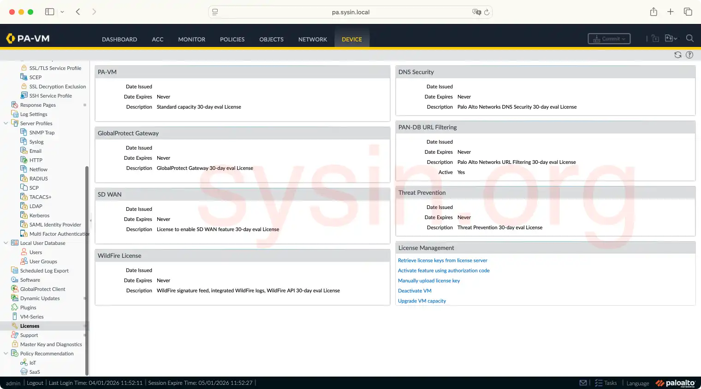

请访问原文链接：Palo Alto PAN-OS 10.2.5 for ESXi & KVM 全功能试用版 (包含 TP URL WF 等高级订阅许可) 2025 年更新版 查看最新版。原创作品，转载请保留出处。
作者主页：sysin.org

Palo Alto Networks PAN-OS 10: World’s First ML-Powered NGFW.
Palo Alto 下一代防火墙
传统防火墙安全解决方案只能被动应对新的威胁。智能网络安全解决方案可以保持对攻击者的技术优势，提高您的业务灵活性。业界领先的下一代防火墙系列是第一个利用机器学习实现主动实时和内联零日保护的产品。
PAN-OS 10：全球首个基于机器学习的下一代防火墙
现在是时候迎接新的网络安全模式了。欢迎来到智能网络安全的时代。全球首个基于机器学习的下一代防火墙的核心是新的 PAN-OS 10，它使您能够有效应对未知威胁 (sysin)，掌握全局的状况，包括物联网的状况，并通过自动策略建议减少错误。
产品概述
了解应用流量

了解应用程序的真实身份
PAN-OS 包括 App-ID™ — Palo Alto 的专利流量分类技术，可自动发现和控制新应用程序，即使是那些试图通过伪装成合法流量、跳跃端口，或通过加密潜入防火墙来规避检测的应用程序。
管理用户访问

按应用程序对用户进行身份验证和授权
PAN-OS 包括 User-ID™，它简化了用户识别和身份验证，并且可以帮助您的员工轻松部署零信任 (sysin)。PAN-OS® 保护用户免受网络钓鱼攻击，阻止向恶意网页提交凭据，并为异常用户行为提供自动补救。
创建基于设备的规则

轻松管理网络上的设备安全
Device-ID™ 是 PAN-OS 的一项功能，它为设备提供策略规则，无论 IP 地址或位置如何变化。使用 Device-ID，您可以了解事件与设备和设备策略之间的关系。PAN-OS 可以帮助改进安全性、解密、QoS 和身份验证策略。
扫描流量内容

阻止规避其他安全方法的漏洞利用
与 Device-ID 和 App-ID 类似，Content-ID™ 使您能够理解和控制通过网络传输的流量内容 (sysin)。Content-ID 在一次网络流量扫描中提供全面的威胁防护，优化您的 NGFW 性能。
最大化吞吐量

实现高吞吐量、低延迟的安全保护
简单地添加越来越多的安全功能的传统策略会导致性能下降和延迟增加。Palo Alto 的单通道架构在单次扫描中执行所有必要的安全功能，从而降低复杂性并最大限度地降低总拥有成本。
保护加密流量

防御通过加密隐藏的威胁
除非经过检查，否则加密流量会使组织对隐藏在内部的安全风险视而不见 (sysin)。黑客利用可见性的缺乏，在加密流量中传播恶意软件。PAN-OS 为 TLS 和 SSL 加密流量提供全面的解密，包括 TLS 1.3 和 HTTP/2。
新增功能
10.0 Feature Highlights (功能亮点)
- SSL Decryption Support for TLSv1.3
- Inline ML for Web-Based Attacks
- Secure Kubernetes Environments with the CN-Series NGFW
- IoT Security
10.1 Feature Highlights (功能亮点)
- Cloud Identity Engine
- PAN-OS OpenConfig Support
- CN-Series Firewall as a k8s Service
- Network Packet Broker
10.2 Feature Highlights (功能亮点)
- Administrator-Level Push
- Multiple Certificate Support for SSL Inbound Inspection
- Simplified IoT Security Onboarding
- Advanced Routing Engine
虚拟化版本系统要求
此版本仅支持以下两个平台。
- VM-Series for VMware vSphere Hypervisor (ESXi)
- VM-Series for KVM
VM-Series for VMware vSphere Hypervisor (ESXi)
PAN-OS Version Support(Minimum) | VMware ESXi Version Support | VMware Virtual Machine Hardware Version | I/O Enhancement Support | Base Image |
|---|---|---|---|---|
PAN-OS 10.2.x (10.2.0) | 6.7, 7.0, 8.0 | vmx-10 | SR-IOV, DPDK | PA-VM-ESX-10.2.0.ova |
PAN-OS 10.1.x (10.1.0) | 6.7, 7.0 | vmx-10 | SR-IOV, DPDK | PA-VM-ESX-10.1.0.ova |
VM-Series for KVM
PAN-OS Version Support (Minimum) | VM-Series for KVM Version Support | I/O Enhancement Support | PAN-OS for VM-Series KVM Base Images |
|---|---|---|---|
PAN-OS 10.1.x (10.1.0)PAN-OS 10.2.x ( 10.2.0) | RHEL 9 | DPDK with SR-IOVDPDK with Virtio | PA-VM-KVM-10.1.x.qcow2 PA-VM-KVM-10.2.x.qcow2 |
PAN-OS 10.2.x (10.2.0) | Ubuntu 22.04 | DPDK with SR-IOVDPDK with Virtio | PA-VM-KVM-10.2.x.qcow2 |
PAN-OS 10.1.x (10.1.0)PAN-OS 10.2.x ( 10.2.0) | CentOS/RHEL 7, 8 | DPDK with SR-IOVDPDK with Virtio | PA-VM-KVM-10.1.x.qcow2 PA-VM-KVM-10.2.x.qcow2 |
PAN-OS 10.1.x (10.1.0) | Ubuntu 20.04 | DPDK with SR-IOVDPDK with Virtio | PA-VM-KVM-10.1.x.qcow2 |
下载地址

Palo Alto PAN-OS 10.2.5 VM-Series for ESXi PreLicensed 30-day eval (include TP, WF, URL, DNS, GP, SD WAN)
系统要求：ESXi 6.7、7.0、8.0，兼容 Workstation 15+、Fusion 11+。
- 百度网盘链接：https://pan.baidu.com/s/1kmhMau-HHjXP8pBlA_sXpQ?pwd=<专享已公布>
留言请注明版本，谢谢。
2025 年新版重新发布！此版本修复了之前的问题。
- 直接可以正常启动到
PA-VM login:模式。 - 许可有效期为 30 天，到期后或者随时可以新建一个 VM 重新试用 30 天。
- 限制：从本站发布之日起 9 个月后此虚拟机将作废，无法正常启动。
✅ 公布获取此专享链接的正确方式：
为保证本站持续发展，该资源通过捐赠获取，捐赠是一种可以附加条件的行为，按照下面指定方式捐赠即可获得该项下载。
捐赠者请知悉：
- 笔者耗费了大量的时间和精力来分享产品和知识，网站运行也需要成本，捐赠是对本站提供下载服务的回报。
- 捐赠获取的软件皆为官方原版或包含了使用方法或分享了技术心得，捐赠是对笔者行业知识的认同和回馈。
- 下载的软件仅供个人学习和研究使用，请遵循原产品使用协议，违者后果自负。
- 如果需要购买产品，请联系开发者和厂商。
- 捐赠或赞赏属于自愿赠予行为，提交后即表示您对作者的支持与认可。为避免误操作，请在确认前仔细检查金额，支付完成后将无法撤销或退还。
- 笔者乐意解答技术问题，但限于时间和知识，如您未能获得满意答案请见谅，捐赠并不包含其他服务。
- 未承诺提供版本更新服务。
- 默认发送当前最新版，如有版本要求请指定。
- 如果不认同上述条款，请勿捐赠，谢谢。
感谢无私捐助者！当然无需任何捐助或者捐赠，您仍然能获得本站 20T+ 的免费资源和技术分享。
Palo Alto PAN-OS 10.2.5 VM-Series for KVM PreLicensed 30-day eval (include TP, WF, URL, DNS, GP, SD WAN)
获取方式同上，留言请注明版本，谢谢。
相关产品：Palo Alto PAN-OS 11.2.5 VM-Series PreLicensed 全功能试用版 (包含 TP URL WF 等高级许可)

文章用于推荐和分享优秀的软件产品及其相关技术，所有软件提供免费版或试用版。内容若侵犯了您的版权，请联系作者删除。如果您喜欢这篇文章，或者觉得它对您有所帮助，亦或发现有不当之处；欢迎发表评论，也欢迎分享这个网站，或者赞赏一下，谢谢！提示：捐赠或赞赏属于自愿赠予行为，提交后即表示您对作者的支持与认可。为避免误操作，请在确认前仔细检查金额，支付完成后将无法撤销或退还。
 支付宝赞赏
支付宝赞赏  微信赞赏
微信赞赏赞赏一下
敬请注册！点击 “登录” - “用户注册”（已知不支持 21.cn/189.cn 邮箱）。 请勿使用联合登录（已关闭）。